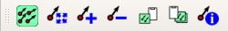

The vector field manager is used to support displaying vector field data such as earth deformation, tidal in which attributes of point features define a vector quantity - one with distance and direction. It displays the vectors as arrows that are scaled and oriented according selected attributes of data points. It can only be used to render point data - line and polygon layers are not drawn by this symbology.
The vector field is defined by attributes in the data, which can represent the field either by cartesian components (x and y components of the field), or polar coordinates. If polar coordinates are used, the angle may be measured either eastwards from north, or northwards from east, and may be either in degrees or radians. The magnitude of field can be scaled up or down to an appropriate size for viewing the field.
As a special case the renderer can also display "height only" data, which displays a vertical arrow scaled using an attribute of the data. This is appropriate for displaying the vertical component of deformation, for example.
The renderer also has options for displaying an error ellipse associated with the vector. The error ellipse is displayed centred on the end of the arrow. It is defined by attributes of the data which can be one of
Whichever form of error ellipse is used, it can be scaled by a constant value, for example multiplying by 2.45 to convert variances to a 95% confidence limit.
The renderer can be used to display just the error ellipse by selecting an vector field type of "No Arrow".
Note that the renderer does not take account of on-the-fly projection of the map or rotation of the map. The arrows and error ellipses are drawn as if north is towards the top of the map.
Displaying vector fields is managed with the vector field manager toolbar. This provides the following functions:
| Configure the vector field symbology for the current layer. The layer must be a point based vector layer. | |
| Rescale the arrows of the current layer to an appropriate view. The scaling is based on the maximum size and the number of arrows in the current view. | |
|
|
Increase the scale of the arrows. |
|
|
Reduce the scale of the arrows. |
| Copy vector settings from the current layer to the clipboard. | |
| Paste the settings from the clipboard to the layer (or layers) selected in the layers panel. | |
| Display this help information |
Vector field symbology is configured using the vector field manager dialog box. The dialog has two main sections - the top section defines how the vector field is expressed in the data, and the bottom section defines characteristics of the arrow symbology. The dialog also has a tab for configuring the error ellipse.
The fields in the dialog are:
| Vector field type | Selects the field type - cartesian, polar, or height only, as described above. | ||||||||||||||
| ... attribute | Selects the data attributes which define the vector field, either X/Y for cartesian fields, length/angle for polar fields, or height for the height only field | ||||||||||||||
| Angle orientation/units | Defines how the angle is defined in the data. The orientation is one of North from East (North is 0°, East is 90°) or East from North (East is 0°, North is 90°). The units are either degrees or radians. | ||||||||||||||
| Arrow style | Defines the size of the components of the arrow. The arrow has three components - the arrow head, the
shaft, and the base. The head may change size according to the length of the vector - the shaft width
and base size are fixed. The sizes are:
|
||||||||||||||
| Symbol units | The units used for the symbology. This is used for all aspects of the symbology apart from the length of the vector arrow and error ellipse. The may either be in the symbol units, or in metres at map scale. | ||||||||||||||
| Base size | The size of the base symbol (the symbol at the base of the arrow or the centre of the ellipse) | ||||||||||||||
| Base border | The border of the base symbol | ||||||||||||||
| Fill | If checked then the base symbol is filled with the selected colour | ||||||||||||||
| One colour? | If checked then same colour is used for then entire symbol. Otherwise the colours of each component can be individually selected. | ||||||||||||||
| Vector scale | A factor by which the attribute values are multiplied to work out the length of the arrow and the size of the error ellipse. This can be changed using the toolbar buttons to increase or decrease the value. This can define the size either in terms of metres at map scale, or in terms of the scale used for the rest of the symbol. | ||||||||||||||
| Scale group | Defines a scale group label for the layer. Layers rendered with the same scale group will be forced to use the same scale. This must be a simple name, for example "displacement". The name can optionally followed by "*" and a mupltiple, which scale the arrow at the specified multiple of the group scale (for example "displacement*2"). |
The error ellipse tab is used to configure plotting error ellipses or vertical error bars.
In the same way as the vector field tab this has two main sections - the top section defines how the error ellipse is expressed in the data, and the bottom section defines characteristics of the ellipse symbology
The fields in the dialog are:
| Error ellipse type | Selects the ellipse type -axes, circular, height as described above, or none. |
| Attribute fields | Depending on the ellipse type up to three attributes must be selected to define the ellipse size and shape. |
| Ellipse scale factor | This is a number by which the ellipse size defined by the attributes is multiplied. Note that the plot scale and scale group defined at the bottom of the dialog still apply to the error ellipse. |
| Ellipse axis orientation/units | Defines how the orientation of the error ellipse axes are defined in the data (for ellipses defined in terms of axes). The orientation is one of North from East (North is 0°, East is 90°) or East from North (East is 0°, North is 90°). The units are either degrees or radians. |
| Draw ellipse/axes | Defines whether the error ellipse is represented as an ellipse, or just as the ellipse axes. |
| Border width | Defines the plotted width of the ellipse border in terms of the symbol units. |
| Tick size | When plotting height errors this defines the size of the tick at each end of the error symbol. |
| Colours: Border/axes colour | Defines the colour of the border of the ellipse, or the ellipse axes or height error symbol. |
| Fill colour | If this is checked then the ellipse is filled with the selected colour. |
The settings for scale, base symbol, and legend and scale box text are common with the settings for the vector field.
The following example code shows how to configure the renderer for a layer from python code.
# Render a layer as a vector field
from VectorFieldLayerManager.VectorFieldLayerManager import VectorFieldLayerManager
layer=iface.mapCanvas().currentLayer()
manager=VectorFieldLayerManager(iface)
manager.renderLayerAsVectorField( layer,
dxField='dx',
dyField='dy',
color='#0000dd',
autoscale=True, # Only works if changing existing layer renderer
)
...
manager.autoscaleVectorLayer(layer)
This renders the layer using blue arrows. The renderLayerAsVectorField method can take the following settings:
| symbolRenderUnit | The symbol unit type - one of "mm", "map units", "px", "%", "pt", "in", "unknown", "m" |
| baseSize | The size of the base symbol |
| baseBorderWidth | The width of the outline of the base symbol |
| baseBorderColor | The colour of the outline of the base symbol |
| fillBase | If True then the base symbol is filled, otherwis it is transparent |
| baseFillColor | The colour used to fill the base symbol |
| drawArrow | If True then an arrow symbol is drawn |
| arrowMode | The arrow mode, one of "xy", "polar", or "height" |
| dxField | The first data field, can be the dx (east) field, vector length for a polar arrow, or height for a height arrow. |
| dyField | The second data field, can be the dy (north) field or vector direction for a polar arrow. |
| lengthField | An alternative name for the the dx field. If this name is used it also sets the arrow mode to polar. |
| directionField | An alternative name for the dy field. If this name is used it also sets the arrow mode to polar. |
| heightField | An alternative name for the dx field. If this name is used it also sets the arrow mode to height. |
| arrowAngleFromNorth | True if the arrow angle is measured clockwise from north, False if it is anticlockwise from east. |
| arrowAngleDegrees | True if the arrow angle is measured in degrees, false if it is in radians. |
| arrowHeadWidth | The width of the arrow head |
| arrowHeadRelativeLength | The length of the arrow head relative to its width |
| arrowMaxRelativeHeadSize | The maximum length of the arrow head as a multiple of the length of the vector |
| arrowShaftWidth | The width of the arrow shaft |
| arrowBorderWidth | The width of the border of the arrow. |
| arrowBorderColor | The colour used for the arrow border |
| fillArrow | If true then the arrow will be filled (default is true). |
| arrowFillColor | The colour used to fill the arrow. |
| drawEllipse | If true then an error ellipse (or height error) is drawn |
| ellipseMode | The mode of the ellipse, one of "axes", "circular", or "height". |
| emaxField | The field defining the length of the ellipse semi-major axis. |
| eminField | The field defining the length of the ellipse semi-minor axis. |
| emaxAzimuthField | The field defining the azimuth of the ellipse semi-major axis. |
| radiusField | Equivalent of emaxField, specifies the field defining the radius of the cirular error ellipse. Also sets the ellipse mode to circular. |
| heightErrorField | Equivalent of the emaxField, specifies the field defining the size of a height error. Also sets the ellipse mode to height. |
| ellipseAngleFromNorth | If true the ellipse semi-major axis azimuth is measured clockwise from north, otherwise anticlockwise from east. |
| ellipseDegrees | If true the ellipse semi-major axis azimuth is measured in degrees, otherwise in radians. |
| ellipseScale | The scale of the ellipse axes or height error relative to the scale of the vector arrow. |
| drawEllipseAxes | If true then the ellipse is represented by the semi-major and semi-minor axes, otherwise it is represented by the outline of the ellipse. |
| ellipseBorderWidth | The width of the ellipse border or height error tick mark |
| ellipseTickSize | The size of the ticks at each end of the height error bar. |
| ellipseBorderColor | The colour of the ellipse border. |
| fillEllipse | If true then the ellipse is filled with colour, otherwise it is not. |
| ellipseFillColor | The colour used to fill the ellipse. |
| scaleIsMetres | If true then the vector arrow and error ellipse sizes are in terms of metres at map scale, otherwise in the same units as the symbol. |
| scaleGroup | The scale group is a name defining a grouping of vector field layers. All vectors in the same scale group are plotted based on the same group factor. If one changes scale the others in the group all change scale to match. |
| scaleGroupFactor | The factor by which the common scale group scale is multiplied to define the scale of this layer. |
| scale | The scale of the arrows and error ellipses for this layer. |
| autoscale | If true then a suitable scale for plotting the vector field will be calculated based on the vectors visible in the current view. |
| color | This is a shorthand for defining the colours used for the symbology. Any colour not explicitly defined will be set to this value. |
Setting names and setting values are case-insensitive. Colour values can be defined using hex RGB (red, green, blue) values, such as "#ffcc00". This can also include an alpha value, eg "#CCFFcc00". Also some colour names can be used, eg "red".
The VectorFieldManager plugin for QGIS 3.0 is a partial replacement for the VectorFieldRenderer plugin in QGIS2. The vector field renderer method of implementation proved difficult to migrate to QGIS3. This plugin replicates the majority of that functionality.
The main features not implemented in this plugin are:
Version 1.0.1: 25 October 2019Initial implementation